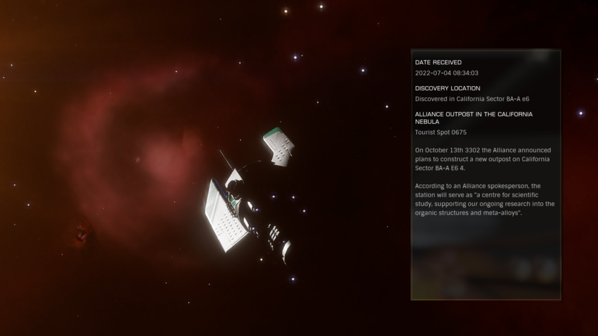
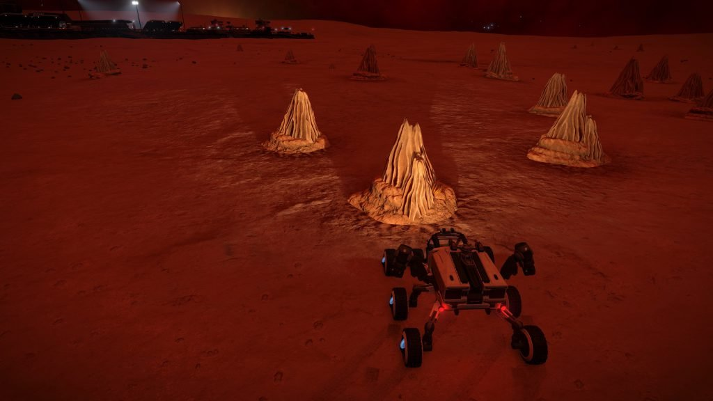
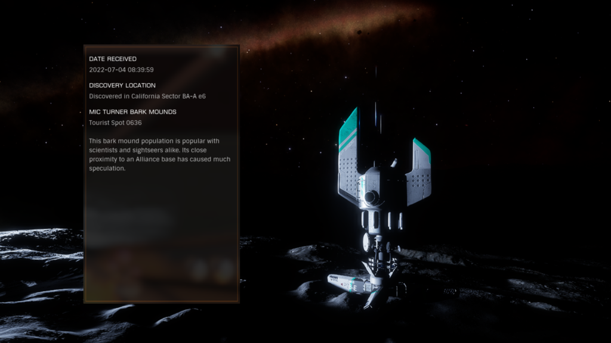
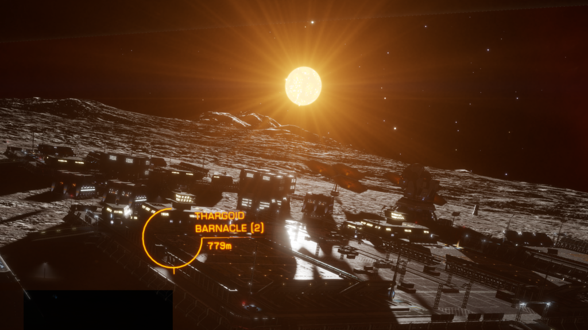

<div class="wp-block-group"><div class="wp-block-group__inner-container">
<div class="wp-block-group"><div class="wp-block-group__inner-container">
<p>Constructed in 3302 by the Alliance, despite accusations that they were attempting to lay claim to the organic structures in the area, this base on California Sector BA-A e6 4 serves as “a centre for scientific study, supporting our ongoing research into the organic structures and meta-alloys,” or so they claim.</p>
<p>The materials and resources required for the construction were raised through an appeal to the larger galactic community.</p>
<p></p>
<figure class="wp-block-image size-large"><figcaption>Orbital Tourist Beacon 0675 </figcaption></figure>
<p>The base is administered by the Turner Research Group. The namesake of the base, Mic Turner, is strongly rumored to have been involved in contact with the Thargoid race in the 3250s.</p>
<p></p>
<p>A large patch of Bark Mounds containing Fungal Growths was 1.7km away from the base on a bearing of 225º. However in April 3307 they vanished and the tourist beacon was unceremoniously dumped on a mountainside on the other side of the planet.</p>
<figure class="wp-block-image"><a href="/assets/media/2017/05/Screenshot_1275.jpg" ref="magnificPopup"></a></figure>
<figure class="wp-block-image size-large"><figcaption>Planetary Tourist Beacon relocated</figcaption></figure>
<p>Signals indicate that there is a Thargoid Barnacle concealed inside one of the buildings on the base. It is not possible to see the barnacle without infiltrating the building with a remote camera.</p>
<p></p>
<figure class="wp-block-image size-large"></figure>
<p>Canonn have been spearheading a campaign to have the bark mounds re-instated and protected.</p>
<figure class="wp-block-embed-youtube wp-block-embed is-type-video is-provider-youtube wp-embed-aspect-16-9 wp-has-aspect-ratio"><div class="wp-block-embed__wrapper">
<iframe allow="accelerometer; autoplay; clipboard-write; encrypted-media; gyroscope; picture-in-picture" allowfullscreen="" frameborder="0" height="360" src="https://www.youtube.com/embed/U6Q5A6RgG7k?feature=oembed" title="Save The Bark Mounds" width="640"></iframe>
</div></figure>
</div></div>
</div></div>